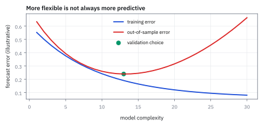
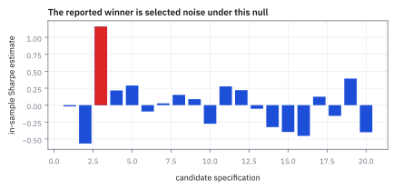

15.5 Spurious Regression and Overfitting
ผลที่สวยในข้อมูลที่ใช้สร้าง model อาจเป็นของปลอมจากสามทาง คือระดับราคาที่เดินสุ่ม ตัวแปรที่มากเกินข้อมูล และการเลือกผู้ชนะจากหลายแบบ และทั้งสามทางจับได้ด้วยข้อมูลที่ model ไม่เคยเห็น
นักวิเคราะห์ถดถอย log ราคาหุ้น A บน log ราคาหุ้น B ย้อนหลัง 750 วันซื้อขาย (ราวสามปี ที่ 252 วันซื้อขายต่อปีของตลาดสหรัฐฯ) ในช่วงที่ตลาดขึ้นทั้งคู่ ได้ $R^2=0.70$ และ $t=41$ แล้วสรุปว่า B อธิบาย A ได้ 70% ถ้ารู้ภายหลังว่าสองเส้นนี้ถูกสุ่มแยกกันโดยไม่มีอะไรเชื่อมกันเลย ผลแบบนี้เกิดบ่อยแค่ไหน และในผลลัพธ์เองมีอะไรเตือนได้ก่อนหรือไม่
ลองตอบก่อนเปิดเฉลย
เกิดบ่อยมาก จำลองสองเส้นที่เดินสุ่มแยกกัน 2,000 คู่ ทุกเส้น drift ขึ้นวันละ 0.08% เหมือนตลาดกระทิง ได้ $R^2$ เกิน 0.70 ถึง 49.6% ของคู่ และ $|t|\gt1.96$ ถึง 98.5% ผล $R^2=0.70$, $t=41$ จึงเป็นแค่ผลกลาง ๆ ของ noise สัญญาณเตือนอยู่ในผลเดียวกันนั้นเอง: Durbin–Watson ราว 0.02 ต่ำกว่า $R^2$ มาก แปลว่า residual แทบไม่ขยับจากวันก่อน พอถดถอยการเปลี่ยนรายวันแทน $R^2$ เหลือราว 0.0007 และ $|t|\gt1.96$ เหลือ 5% ตามที่ควร
ภาพรวมก่อนลงสูตร
หน้าก่อน ๆ ของบทนี้สร้างเครื่องมือ: OLS regression, beta และ alpha ของ CAPM, multi-factor model และ pairs trading หน้านี้ดูว่าเครื่องมือชุดเดียวกันหลอกเราได้อย่างไร มีโรคสามชนิดที่อาการเหมือนกันทุกประการ คือผลในข้อมูลที่ใช้สร้าง model (in-sample) สวย แต่พังในข้อมูลใหม่ (out-of-sample)
โรคแรกคือ spurious regression: ระดับราคาที่เดินสุ่มทำให้ SE ที่ OLS พิมพ์ออกมาเล็กเกินจริงเป็นสิบเท่า โรคที่สองคือ overfitting: ตัวแปรหรือ parameter ที่มากเกินข้อมูลจับ noise เข้าไปด้วย $R^2$ ที่ได้ฟรีในข้อมูลเก่ากลายเป็น $R^2$ ที่เสียในข้อมูลใหม่ โรคที่สามคือการเลือกผู้ชนะ: ลองหลายแบบแล้วเก็บตัวที่ดีที่สุด ซึ่งรวมถึง optimizer ที่เลือกน้ำหนักพอร์ตจากค่าประมาณที่คลาดด้วย
รูปด้านล่างสรุปโรคที่สามซึ่งเจอบ่อยที่สุดในการวิจัยกลยุทธ์ ยิ่งลองมาก ผู้ชนะยิ่งดูดีในข้อมูลที่ใช้เลือก แต่ในข้อมูลใหม่มันกลับไปเป็นศูนย์ ทั้งสามโรครักษาด้วยหลักเดียว: ตัดสินใจด้วยข้อมูลที่รู้ ณ วันนั้น แล้ววัดผลกับข้อมูลที่ไม่เคยใช้ตัดสินใจ หน้านี้สร้างทีละโรค วัดขนาดของมันเป็นตัวเลข แล้วจบที่ขั้นตอน backtest ที่ซื่อสัตย์
รูป — Sharpe ของผู้ชนะ ในข้อมูลที่ใช้เลือกกับในข้อมูลใหม่
ศัพท์ที่ใช้ในหัวข้อนี้
- In-sample และ out-of-sample
- ข้อมูลที่ใช้สร้างหรือเลือก model กับข้อมูลที่ model ไม่เคยเห็น ผลที่ใช้ตัดสินว่ากลยุทธ์ใช้ได้ต้องมาจากชุดหลังเท่านั้น
- Spurious regression
- regression ระหว่างระดับของสองอนุกรมที่เดินสุ่มโดยไม่เกี่ยวกัน แต่ได้ $R^2$ สูงและ $t$ ใหญ่ เพราะสมมติฐานของ SE พัง ใช้เป็นคำเตือนก่อนถดถอยระดับราคาใด ๆ
- Overfitting
- การปรับ model ให้เข้ากับข้อมูลเก่ามากจนจับ noise เฉพาะตัวอย่างไปด้วย ผลในข้อมูลใหม่จึงแย่กว่าที่เห็น และอาจแย่กว่าไม่มี model เลย
- Effective sample size
- จำนวนข้อมูลอิสระที่ให้ความแม่นเท่ากับข้อมูลที่ติดกันจริง ใช้แก้ SE เมื่อข้อมูลแต่ละวันไม่อิสระกัน
- Durbin–Watson (DW)
- ตัวเลขวัดว่า residual วันติดกันต่างกันแค่ไหน ใกล้ 2 คือปกติ ใกล้ 0 คือ residual แทบไม่ขยับ ใช้จับ regression ลวงบนระดับราคา
- Data leakage
- การที่ข้อมูลซึ่งยังไม่มี ณ วันตัดสินใจรั่วเข้ามาใน backtest เช่นรายชื่อหุ้นที่รอดถึงวันนี้ หรืองบการเงินที่ถูกแก้ย้อนหลัง ทำให้ผลดูดีโดยไม่มี error ใดเตือน
- Walk-forward และ holdout
- walk-forward คือ fit ด้วยข้อมูลถึงวันหนึ่งแล้วทดสอบกับช่วงถัดไป แล้วเลื่อนไปเรื่อย ๆ holdout คือข้อมูลช่วงท้ายที่ล็อกไว้และเปิดดูครั้งเดียวหลังตรึง model แล้ว
สัญลักษณ์และหน่วย
| สัญลักษณ์ | ความหมาย | หน่วย |
|---|---|---|
| $A_t,\ B_t$ | log ราคาของสองหุ้น วัดจากวันเริ่ม | หน่วย log ราคา |
| $\varepsilon_t,\ \sigma$ | shock รายวันของ random walk และความผันผวนของมัน | หน่วย log ราคา |
| $e_t,\ \rho_e$ | residual ของ regression และ autocorrelation ที่ lag หนึ่งของมัน | หน่วย log ราคา และไม่มีหน่วย |
| $n,\ n_{\rm eff}$ | จำนวนวัน และจำนวนข้อมูลอิสระเทียบเท่า | วัน |
| $k$ | จำนวนตัวแปรอธิบายใน model | นับ |
| $M,\ T$ | จำนวนแบบที่ลองก่อนเลือกผู้ชนะ และความยาว backtest | นับ และปี |
| $Z_m$ | ค่าทดสอบของแบบที่ $m$ ภายใต้สมมติฐานว่าไม่มีฝีมือ | จำนวน SE |
| $\varphi,\ \Phi$ | density และ CDF ของ Normal มาตรฐาน | ไม่มีหน่วย |
ขั้นที่ 1 — ทำไม random walk ดูเหมือนมี trend
ก่อนดูการทดลอง ต้องเห็นก่อนว่าเส้นที่เดินสุ่มหน้าตาเป็นอย่างไร ให้ log ราคาเป็น random walk: แต่ละวันบวก shock อิสระที่ค่าเฉลี่ยศูนย์ ความผันผวน 1% แล้ววัดว่าหลัง 750 วันเส้นอยู่ห่างจุดเริ่มแค่ไหน
variance ของผลรวมของ shock อิสระคือผลบวกของ variance จึงโตตามจำนวนวัน (สมบัติเดียวกับที่ทำให้ variance ของ Brownian motion โตตามเวลา) ไม่มีแรงไหนดึงเส้นกลับ ก้าวละ 1% แต่สามปีห่างจุดเริ่มได้ราว 27% และเส้นมักอยู่ฝั่งเดียวของจุดเริ่มนาน ๆ ดูเหมือนมี trend ทั้งที่ไม่มี
ถ้าเพิ่ม drift วันละ 0.08% เหมือนตลาดกระทิง ทั้งสองเส้นถูกลากขึ้นราว $750\times0.08\%=60\%$ ตามเวลาเหมือนกัน OLS วัดว่าระดับของสองเส้นเรียงกันแค่ไหน มันจึงเจอ “ความสัมพันธ์” ที่แรงในคู่ที่บังเอิญไปทางเดียวกัน ทั้งที่ตัวเชื่อมจริงมีแค่ “เวลาเดินไปข้างหน้า”
รูป — random walk สองเส้นที่สุ่มแยกกัน แต่ดูเหมือนเกาะกัน
ขั้นที่ 2 — การทดลอง: ถดถอยระดับที่ไม่เกี่ยวกัน 2,000 ครั้ง
โจทย์ให้อะไรมาบ้าง: สร้าง log ราคาสองเส้นที่อิสระกันสนิท เส้นละ 750 วัน shock รายวันความผันผวน 1% ความจริงคือ slope เป็นศูนย์ ถดถอยระดับของ A บนระดับของ B และถดถอยการเปลี่ยนรายวันของ A บนของ B ทำซ้ำ 2,000 คู่ ชุดแรกไม่มี drift ชุดที่สองให้ทั้งคู่ drift ขึ้นวันละ 0.08% (ราว 20% ต่อปีที่ 252 วัน) เหมือนตลาดกระทิง ใช้ seed ตายตัวในโค้ดท้ายหน้า
| ผล | ไม่มี drift | drift 0.08% ต่อวัน |
|---|---|---|
| ระดับ: median $R^2$ | 0.164 | 0.696 |
| ระดับ: $R^2\gt0.70$ | 5.2% | 49.6% |
| ระดับ: median $|t|$ | 12.1 | 41.4 |
| ระดับ: $|t|\gt1.96$ | 90.8% | 98.5% |
| ระดับ: $|t|\gt10$ | 58.0% | 91.6% |
| ระดับ: median DW | 0.021 | 0.021 |
| การเปลี่ยนรายวัน: median $R^2$ | 0.0007 | 0.0007 |
| การเปลี่ยนรายวัน: $|t|\gt1.96$ | 5.9% | 5.0% |
| การเปลี่ยนรายวัน: median DW | 2.00 | 2.00 |
คำตอบ: ถ้าวิธีคิด SE ถูก สัดส่วนที่ $|t|\gt1.96$ ต้องเป็นราว 5% แต่ระดับให้ 90.8% ผิดไปราว 18 เท่า และเมื่อตลาดขึ้นทั้งคู่ ครึ่งหนึ่งของการทดลองให้ $R^2$ เกิน 0.70 ทั้งที่สองเส้นไม่เกี่ยวกันเลย พอเปลี่ยนเป็นการเปลี่ยนรายวัน ทุกอย่างกลับมาตามที่ควร ข้อมูลชุดเดียวกัน ถามคนละคำถาม ได้คำตอบคนละโลก
ตรวจเองใน 10 วินาที: ความคลาดจากการนับ 2,000 ครั้งรอบ 5% คือราว $\sqrt{0.05\times0.95/2000}\approx0.5\%$ ตัวเลข 5.0% และ 5.9% ของการเปลี่ยนรายวันอยู่ในระยะนั้น ส่วน 90.8% ห่างไปกว่า 170 เท่าของความคลาดนั้น ไม่ใช่โชค
รูป — ข้อมูลคู่เดียวกัน ดูเป็นระดับกับดูเป็นการเปลี่ยนรายวัน
ขั้นที่ 3 — ข้อมูลที่ติดกันนับเป็นข้อมูลอิสระได้กี่ตัว
SE ใน OLS regression สมมติว่า error แต่ละวันอิสระกัน ถ้าไม่อิสระ ข้อมูล $n$ วันให้ความรู้น้อยกว่า $n$ ตัว วัดได้จาก variance ของค่าเฉลี่ย ให้ข้อมูลมี variance $\sigma^2$ และ correlation ระหว่างวันที่ห่างกัน $k$ วันเป็น $\rho^k$ แบบ AR(1) (รายละเอียดของ autocorrelation อยู่ในบทถัดไป)
แต่ละแถว $i$ ของผลรวมสองชั้นมีพจน์ $\rho^0$ หนึ่งตัว และ $\rho^k$ สองตัว (วันที่อยู่ก่อนและหลัง $k$ วัน) เมื่อ $n$ ใหญ่ ผลของขอบตารางเล็กจนละได้ อนุกรมเรขาคณิตรวมได้ $2\rho/(1-\rho)$ บวก 1 แล้วได้ $(1+\rho)/(1-\rho)$ ดังนั้น $\operatorname{Var}(\bar X)\approx\sigma^2/n_{\rm eff}$ เหมือนมีข้อมูลอิสระ $n_{\rm eff}$ ตัว
autocorrelation แค่ 0.1 กิน 750 วันไปราว 136 ตัว SE ที่คำนวณจาก 750 จึงเล็กเกินจริง ถ้า $\rho$ ใกล้ 1 ตัวคูณ $(1+\rho)/(1-\rho)$ พุ่งขึ้นไม่จำกัด ซึ่งคือสิ่งที่เกิดกับ residual ของ regression ระดับในขั้นถัดไป
ขั้นที่ 4 — Durbin–Watson จับโรค และผลต่างรักษาโรค
ใน regression ของระดับ residual เองก็เกือบเป็น random walk มันพลาดทางเดียวกันติดกันหลายร้อยวัน ต้องการตัวเลขที่บอกว่า residual วันนี้ต่างจากเมื่อวานแค่ไหน นั่นคือ DW แล้วแปลงมันกลับเป็น $\rho_e$ เพื่อประเมินว่า SE เล็กเกินไปกี่เท่า
กระจาย $(e_t-e_{t-1})^2$ ได้ $e_t^2+e_{t-1}^2-2e_te_{t-1}$ ผลรวมของสองพจน์แรกเกือบเท่ากับ $2\sum e_t^2$ ส่วนพจน์ที่สามคือ $2\rho_e\sum e_t^2$ ตามนิยามของ autocorrelation ที่ lag หนึ่ง DW จึงใกล้ 2 เมื่อ residual ไม่ติดกัน และใกล้ 0 เมื่อมันแทบไม่ขยับ DW 0.021 ย้อนกลับเป็น $\rho_e\approx0.99$
ใช้ตัวคูณของ effective sample size จากขั้นก่อน SE จริงควรใหญ่กว่าที่พิมพ์ราว 14 เท่า median $|t|$ 12.1 ของชุดไม่มี drift จึงเหลือราว 0.86 ไม่มีนัยสำคัญ กฎหัวแม่มือของ Granger กับ Newbold: ถ้า $R^2$ สูงกว่า DW ให้สงสัยทันที
การรักษาคือถดถอยการเปลี่ยนรายวัน ซึ่งเป็น shock อิสระตามที่ OLS ต้องการ ตารางการทดลองแสดงว่าได้ DW 2.00 และ $|t|\gt1.96$ กลับมาราว 5% ถดถอยระดับมีความหมายกรณีเดียว คือเมื่อสองระดับ cointegrate แบบใน pairs trading และ cointegration: residual ถูกดึงกลับ DW ไม่ใกล้ศูนย์ และต้องตัดสินด้วยเกณฑ์ของ Engle–Granger ไม่ใช่ $t$ ธรรมดา
รูป — residual ที่เดินช้า กับ residual ที่กระโดดทุกวัน
ขั้นที่ 5 — $R^2$ ที่ได้ฟรีในข้อมูลเก่า คือ $R^2$ ที่เสียในข้อมูลใหม่
โรคที่สองไม่ต้องมี random walk เลย ให้ $y$ เป็น noise ความผันผวน $\sigma$ ที่ไม่เกี่ยวกับอะไร แล้วใส่ตัวแปรอธิบายที่เป็นเลขสุ่มล้วน $k$ ตัว (ปรับให้ variance เป็น 1) บวก intercept ถามสองคำถาม: $R^2$ ในข้อมูลที่ใช้ fit ขึ้นเท่าไร และเมื่อนำ $\hat\beta$ ชุดเดิมไปใช้กับข้อมูลใหม่ขนาดเท่ากัน $R^2$ เป็นเท่าไร คำถามแรกใช้เรขาคณิตของ OLS regression: หลังหักค่าเฉลี่ย $\tilde{\mathbf y}$ เป็น vector ในพื้นที่ $n-1$ มิติ และ fitted value คือเงาของมันบนพื้นที่ $k$ มิติที่ตัวแปรขยะกาง
สามแถวแรกตอบคำถามแรก หมุนแกนให้พื้นที่ $k$ มิติของตัวแปรขยะเป็น $k$ แกนแรก ทำได้เพราะความยาวไม่เปลี่ยนเมื่อหมุน ถ้า $y$ เป็น Normal อิสระ ทิศของ $\tilde{\mathbf y}$ สุ่มเท่ากันทุกทาง แต่ละแกนจึงถือความยาวกำลังสองเฉลี่ย $1/(n-1)$ ของทั้งหมด เงาบน $k$ แกนเก็บไว้ $k/(n-1)$ ตัวแปรขยะ 50 ตัวบนข้อมูล 750 วันจึงให้ $R^2$ ฟรีราว 6.7%
แถวที่เหลือตอบคำถามที่สอง $\hat\beta_j$ คือ covariance ตัวอย่างของ $x_j$ กับ $y$ หารด้วย variance 1 ของ $x_j$ ซึ่งเป็นค่าเฉลี่ยของ $n$ พจน์ที่แต่ละพจน์มี variance $\sigma^2$ จึงคลาดรอบศูนย์ด้วย variance $\sigma^2/n$ ตอนนำไปใช้กับวันใหม่ $\hat\beta$ มาจากข้อมูลเก่า จึงอิสระกับ $x$ และ noise ของวันใหม่ variance ของ error จึงบวกกันได้: $\sigma^2$ จาก noise บวก $\sigma^2/n$ จากแต่ละ $\hat\beta_j$ ที่คูณ $x_j$ variance 1 รวม $k$ ตัว model ที่ทำนายแย่กว่าการตอบ “ค่าเฉลี่ย” เฉย ๆ ได้ $R^2$ ติดลบ
ผลคือช่องว่างระหว่างข้อมูลเก่ากับข้อมูลใหม่ราว $2k/n=13.3\%$ ค่าประมาณอันดับแรกนี้มองข้ามว่า intercept ก็ถูก fit และ $X^\top X$ ของข้อมูลจริงก็แกว่ง การจำลอง 300 ครั้งในโค้ดท้ายหน้าได้ $+6.8\%$ ในข้อมูลเก่าและ $-7.8\%$ ในข้อมูลใหม่ แย่กว่าค่าประมาณเล็กน้อย adjusted $R^2$ หักส่วนที่ได้ฟรีออกโดยเฉลี่ย model 50 ตัวที่รายงาน $R^2$ 10% เหลือ $1-0.90\times749/699\approx3.6\%$
รูป — ตัวแปรขยะยิ่งมาก ข้อมูลเก่ายิ่งสวย ข้อมูลใหม่ยิ่งแย่
ขั้นที่ 6 — ข้อมูล 750 วันรองรับตัวแปรได้กี่ตัว
โจทย์ให้อะไรมาบ้าง: กฎหัวแม่มือที่ใช้กันคืออยากได้ข้อมูลอิสระราว 30 จุดต่อ parameter หนึ่งตัว (เป็นกฎที่คนใช้ ไม่ใช่ทฤษฎีบท) ข้อมูล 750 วัน ผลตอบแทนมี autocorrelation ที่ lag หนึ่ง 0.1, 0.3 หรือ 0.6 ใช้ effective sample size จากขั้นที่หาไว้
คำตอบ: ถ้าข้อมูลอิสระจริงรองรับได้ราว 25 ตัว autocorrelation 0.1 เหลือ 20 ตัว 0.3 เหลือ 13 ตัว และ 0.6 เหลือแค่ 6 ตัว เก็บข้อมูลยาวขึ้นก็ไม่ฟรี เพราะข้อมูลที่ยาวขึ้นมักคร่อมหลายสภาวะตลาดที่ความสัมพันธ์ไม่เหมือนกัน ตลาดเปลี่ยนเร็วกว่าที่ประวัติจะสะสมได้
ตรวจเองใน 10 วินาที: $0.9/1.1\approx0.818$ คูณ 750 ได้ราว 614 หารด้วย 30 ได้ 20.5 ปัดลงเป็น 20 ตัวแปร
รูป — ยิ่งซับซ้อน ข้อมูลเก่ายิ่งสวย แต่อนาคตไม่ตาม

ขั้นที่ 7 — ผู้ชนะจาก 400 แบบ: Sharpe ในข้อมูลที่ใช้เลือกกับในข้อมูลใหม่
โรคที่สามเกิดแม้แต่ละแบบมีตัวแปรน้อยนิด ทีมลอง 20 สัญญาณ × 5 ช่วงเวลา × 4 เกณฑ์ = 400 แบบ บน backtest $T=5$ ปี ภายใต้สมมติฐานว่าไม่มีแบบไหนมีฝีมือ Sharpe รายปีที่วัดได้ของแต่ละแบบคือ noise ที่มี SE ราว $1/\sqrt T$ (จาก การทดสอบ Sharpe ratio) เขียนเป็น $\widehat{\mathrm{SR}}_m=Z_m/\sqrt T$ โดย $Z_m$ เป็น Normal มาตรฐานอิสระ ถามว่าผู้ชนะดูดีแค่ไหนในข้อมูลที่ใช้เลือก และจะเหลือเท่าไรในข้อมูลใหม่
ค่าสูงสุดไม่เกิน $z$ ก็ต่อเมื่อทุกตัวไม่เกิน $z$ และทุกตัวอิสระกัน โอกาสจึงเป็นผลคูณ $\Phi(z)^M$ หาอนุพันธ์ได้ density ของผู้ชนะ แล้วคำนวณค่าเฉลี่ยด้วย integral เชิงตัวเลขในโค้ด (หน้า ปัญหาการทดสอบหลายครั้ง ไล่การหาสูตรนี้ละเอียด) ผู้ชนะจาก 400 แบบที่เป็น noise ล้วนจึงคาดว่าโชว์ Sharpe ราว 1.33 ในข้อมูลที่ใช้เลือก ซึ่งคือจุดแดงขวาในรูปภาพรวม
แถวที่ห้าคือหัวใจของหน้านี้ Sharpe ของผู้ชนะในข้อมูลใหม่วัดจาก noise ชุดใหม่ที่ไม่รู้ว่าใครเคยชนะ ค่าเฉลี่ยของมันจึงเท่ากับของแบบใดก็ได้หนึ่งแบบ คือศูนย์ ถ้วยรางวัลไม่ติดตัวไปข้างหน้า การเลือกจึงไม่ได้สร้างฝีมือ มันแค่ย้าย noise ที่โชคดีที่สุดมาวางไว้หน้าสุด ถ้าจะให้ผ่านเกณฑ์ 5% หลังค้นหา 400 แบบ Bonferroni บังคับให้ค่าทดสอบเกิน 3.66 ไม่ใช่ 1.645 คือ Sharpe ห้าปีต้องถึง 1.64 ไม่ใช่ 0.74
แบบที่ลองจริงมักคล้ายกัน lookback 20 วันกับ 21 วันให้ผลแทบเหมือนกัน จำนวนแบบที่อิสระจริงจึงน้อยกว่า 400 และผู้ชนะปลอมดูดีน้อยกว่านี้ แต่จะวัดว่าน้อยลงเท่าไรต้องใช้ correlation จริงของผลตอบแทนทุกแบบที่ลอง ไม่ใช่การเดา ทั้งหมดนี้ใช้ได้ก็ต่อเมื่อทีมจดว่าลองไปกี่แบบ
รูป — ผู้ชนะที่ถูกเลือกคือ noise ที่สูงที่สุด

ขั้นที่ 8 — optimizer ก็เป็นเครื่องเลือกผู้ชนะ
โจทย์ให้อะไรมาบ้าง: สินทรัพย์สองตัวเหมือนกันทุกอย่าง ผลตอบแทนเฉลี่ยจริง 6% ต่อปี ความผันผวน 20% และไม่สัมพันธ์กัน แต่ค่าประมาณจากประวัติคลาดไปคนละทาง: ตัวแรกประมาณได้ 8% ตัวที่สองได้ 4% ความคลาดเฉลี่ยเป็นศูนย์ ค่าประมาณจึงไม่เอียงโดยรวม ใช้พอร์ต Sharpe สูงสุดของ Markowitz ซึ่งให้น้ำหนักเป็นสัดส่วนกับ $\Sigma^{-1}\hat\mu$ แล้วปรับให้รวมเป็นหนึ่ง
คำตอบ: covariance เป็น diagonal และสองตัวมีความผันผวนเท่ากัน $\Sigma^{-1}\hat\mu$ จึงเป็นแค่ $\hat\mu$ หารด้วยค่าคงที่ น้ำหนักจึงเป็น 8 ต่อ 4 หรือ 2/3 ต่อ 1/3 optimizer เชื่อว่าได้ Sharpe 0.447 ของจริงได้ 0.402 แย่กว่าการแบ่งครึ่งเฉย ๆ ซึ่งได้ 0.424 เพราะมันทุ่มน้ำหนักให้ตัวที่ค่าประมาณสูงเกินจริงพอดี นี่คือการเลือกผู้ชนะในรูปที่เนียนที่สุด: optimizer หาทิศที่ noise ในค่าประมาณเข้าข้างมากที่สุดแล้วเดิมพันหนักที่นั่น คนในวงการเรียก mean-variance ว่า “error-maximizing” ด้วยเหตุนี้ ยิ่งยอมให้ short มาก ช่องว่างยิ่งกว้าง ทางแก้คือดึงค่าประมาณเข้าหาค่ากลางก่อนใส่ optimizer (shrinkage แบบ Ledoit–Wolf หรือมุมมองแบบ Black–Litterman) และใส่ข้อจำกัดน้ำหนัก
ตรวจเองใน 10 วินาที: $(4/9+1/9)=5/9$ และ $\sqrt{5/9}\approx0.745$ คูณ 20% ได้ 14.9% ผลตอบแทนที่ optimizer เห็น $16/3+4/3=20/3\approx6.67\%$ แต่ของจริงคือ 6% เพราะทั้งสองตัวได้ 6% จริง
รูป — Sharpe ที่ optimizer เห็น กับที่ได้จริง
ขั้นที่ 9 — นิยามการทดสอบที่ซื่อสัตย์: เดินไปข้างหน้าเท่านั้น
ทั้งสามโรคมีทางป้องกันร่วมกันข้อเดียว: การตัดสินใจทุกอย่างต้องใช้ข้อมูลถึงวันนั้นเท่านั้น แล้วไปวัดผลกับช่วงถัดไปที่ยังไม่เคยเห็น นี่คือนิยามของกระบวนการที่เราเลือกใช้ ไม่ใช่ผลที่พิสูจน์ แบ่งข้อมูลตามเวลาเป็นช่วง $D_1,D_2,\dots$ แล้วทำซ้ำสองบรรทัดนี้
$\hat\theta_k$ คือทุกอย่างที่ตัดสินใจจากข้อมูลช่วง 1 ถึง $k$: ตัวแปรที่ใช้ parameter เกณฑ์เข้าออก รายชื่อหุ้น แล้ว $s_{k+1}$ คือผลในช่วงถัดไปที่ model ยังไม่เห็น เลื่อน $k$ ไปทีละช่วงแล้วต่อผลทุกช่วงเข้าด้วยกันเป็น backtest เส้นเดียว การเลือกเกิดก่อนเห็นผลเสมอ ผลที่ได้จึงไม่มีอคติจากการเลือกแบบขั้นผู้ชนะ 400 แบบ หน้าต่างฝึกมีสองแบบ แบบเลื่อน (rolling) ใช้ความยาวคงที่ให้ค่าประมาณแต่ละช่วงเทียบกันได้ แบบขยาย (expanding) ใช้ข้อมูลทั้งหมดถึงวันนั้น ราคาที่จ่ายของ walk-forward คือใช้ข้อมูลฝึกน้อยกว่าการแบ่งแบบอื่น
ต้องเว้นช่องว่าง (embargo) ระหว่างข้อมูลฝึกกับช่วงทดสอบอย่างน้อยเท่าระยะที่สัญญาณมองย้อนหรือถือสถานะ สัญญาณ momentum 12 เดือนใช้ผลตอบแทนย้อนหลังราว 252 วัน ถ้าช่วงฝึกต่อกับช่วงทดสอบติดกัน label ของวันท้าย ๆ ในช่วงฝึกจะคาบเกี่ยวกับผลตอบแทนในช่วงทดสอบ สุดท้ายเก็บ holdout ช่วงท้ายไว้ ล็อก model ทั้งหมดก่อน แล้วเปิดดูครั้งเดียว ถ้าผลไม่ดีแล้วกลับไปปรับ holdout นั้นก็หมดสภาพ เพราะมันกลายเป็นข้อมูลที่ใช้เลือกไปแล้ว
วินัยเดียวกันใช้กับข้อมูล: ใช้แต่ตัวเลขที่มีณ วันนั้น ตัวอย่างการรั่วที่นักวิจัยมีประสบการณ์ยังพลาด: รายชื่อหุ้นเฉพาะตัวที่รอดถึงวันนี้ งบการเงินที่ลงวันสิ้นไตรมาสแทนวันประกาศ ตัวเลขที่ถูกแก้ย้อนหลัง ราคาที่ปรับ split แล้วถูกใช้เป็นตัวแปร (ราคาปรับที่ต่ำมากในอดีตบอกว่าหุ้นจะ split อีกหลายครั้ง คือจะขึ้นมาก) การนับวันผิดหนึ่งวันจนผลตอบแทนของวันถัดไปหลุดเข้าไปในสัญญาณ และการ normalize ข้อมูลทั้งชุดก่อนแบ่ง (ตัวอย่างอัตราแลกเปลี่ยนใน ปัญหาการทดสอบหลายครั้ง)
รูป — walk-forward แบบหน้าต่างเลื่อนกับหน้าต่างขยาย
ความผิดที่ทำให้ backtest สวยกว่าความจริง
เชื่อ $t$ ของ regression ระดับ: ตารางการทดลองแสดงว่า $|t|\gt10$ เกิด 58% ของครั้งแม้สองเส้นไม่เกี่ยวกันเลย ดู DW ทุกครั้ง ถ้าต่ำกว่า 1 หรือต่ำกว่า $R^2$ อย่าเชื่อ $t$
ไม่นับว่าลองมากี่แบบ: ผู้ชนะจาก 400 แบบต้องเทียบกับ Sharpe 1.33 ที่ noise ล้วนก็ทำได้ ไม่ใช่เทียบกับ 0 และต้องผ่าน 1.64 ไม่ใช่ 0.74 ทีมที่ไม่จดจำนวนแบบที่ลองจะไม่มีทางรู้ว่าต้องหักเท่าไร
สุ่มแบ่ง fold สำหรับข้อมูลที่เรียงตามเวลา: cross-validation แบบสุ่มเอาวันจากอนาคตไปอยู่ในชุดฝึก และสัญญาณที่มองย้อน 252 วันของวันในชุดฝึกจะมีผลตอบแทนของชุดทดสอบปนอยู่ ผลที่ได้ดีเกินจริงโดยไม่มี error ขึ้นเลย ต้องแบ่งตามเวลา และเว้นช่องว่างอย่างน้อยเท่าระยะที่สัญญาณมองย้อน
เปิด holdout หลายรอบ: ทุกครั้งที่เปิดแล้วกลับไปแก้ คือการทดสอบอีกหนึ่งครั้งบนข้อมูลชุดเดิม เปิด 20 รอบที่เกณฑ์ 5% โอกาสที่จะได้ผ่านปลอมอย่างน้อยหนึ่งรอบคือ $1-0.95^{20}\approx64\%$
เชื่อ optimizer ที่ป้อนด้วยค่าประมาณดิบ: ตัวอย่างสองสินทรัพย์แสดงว่า Sharpe ที่ optimizer รายงาน (0.447) สูงกว่าที่ได้จริง (0.402) และของจริงแย่กว่าการแบ่งครึ่ง (0.424)
ใช้ทำอะไรบนโต๊ะจริง
ทีมวิจัยกลยุทธ์ใช้ขั้นตอนของหน้านี้เป็นด่านก่อนใส่เงินจริง: ทดสอบ unit root ก่อนถดถอยระดับ นับข้อมูลอิสระก่อนเพิ่มตัวแปร จดจำนวนแบบที่ลองไว้ในสมุดวิจัยแล้วหักด้วย Bonferroni หรือวิธีที่ใกล้เคียง ทดสอบแบบ walk-forward ด้วยข้อมูล ณ วันนั้นและแบบจำลองต้นทุนเดียวกับที่ใช้จริง และเปิด holdout ครั้งเดียว ถ้ามีเหตุผลเชิงกลไกว่าทำไมสัญญาณควรทำงาน ให้เขียนไว้ก่อน backtest เพราะมันลดจำนวนแบบที่ต้องลองและทำให้ผลอ่านได้ ฝ่ายความเสี่ยงใช้คำถามชุดเดียวกันตรวจกลยุทธ์ที่คนอื่นส่งมา ผลที่ดูดีเกินจริงแทบเป็นสัญญาณเตือนเสมอ
โจทย์ตรวจความเข้าใจ
1. regression ของระดับให้ $R^2=0.9$, $t=8$ และ DW 0.8 ควรเชื่อ $t$ แค่ไหน
เฉลย
DW 0.8 ย้อนกลับเป็น $\rho_e\approx1-0.8/2=0.6$ ตัวคูณ SE ราว $\sqrt{1.6/0.4}=\sqrt4=2$ ค่า $t$ ที่ควรเป็นจึงราว $8/2=4$ ยังไม่ทิ้งทั้งหมด แต่ $R^2$ 0.9 สูงกว่า DW 0.8 ตามกฎของ Granger กับ Newbold ต้องสงสัยว่าเป็น regression ลวง ต้องทดสอบ unit root และลองถดถอยการเปลี่ยนก่อนสรุป
2. model หนึ่งใช้ตัวแปร 20 ตัวบนข้อมูล 250 วัน รายงาน $R^2=12\%$ adjusted $R^2$ เป็นเท่าไร และถ้าตัวแปรทั้ง 20 ตัวเป็น noise ล้วน คาดว่า $R^2$ ในข้อมูลที่ใช้ fit และในข้อมูลใหม่เป็นเท่าไร
เฉลย
adjusted $R^2=1-0.88\times249/229=1-0.9569\approx4.3\%$ ถ้าเป็น noise ล้วน ข้อมูลที่ใช้ fit ให้ $R^2$ ฟรีเฉลี่ย $20/249\approx8.0\%$ และข้อมูลใหม่ให้ราว $-20/250=-8.0\%$ (ค่าประมาณอันดับแรก ของจริงแย่กว่าเล็กน้อย) $R^2$ 12% ที่รายงานจึงมีส่วนที่อธิบายได้จริงเพียงราว 4 จุด และต้องรอดในข้อมูลใหม่ก่อนจะเชื่อแม้แต่ 4 จุดนั้น
3. สินทรัพย์สองตัวในขั้น optimizer ถ้าค่าประมาณคลาดน้อยลงเป็น 7% กับ 5% น้ำหนัก Sharpe ที่ optimizer เห็น และ Sharpe จริงเป็นเท่าไร
เฉลย
น้ำหนักเป็นสัดส่วนกับ 7 ต่อ 5 คือ $7/12\approx0.583$ กับ $5/12\approx0.417$ ความผันผวน $20\%\sqrt{(49+25)/144}=20\%\times0.717\approx14.34\%$ optimizer เห็นผลตอบแทน $(49+25)/12=6.17\%$ และ Sharpe $6.17/14.34\approx0.430$ ของจริงได้ $6/14.34\approx0.418$ ยังต่ำกว่าการแบ่งครึ่ง 0.424 แต่ช่องว่างแคบลง ยิ่งค่าประมาณแม่น ราคาของการ optimize ยิ่งถูก
คำนวณซ้ำด้วย JavaScript
รันใน Node.js ได้โดยไม่ต้องติดตั้งอะไร ใช้เวลาราวสามวินาที โค้ดทำการทดลอง 2,000 คู่ด้วย seed ตายตัว (คู่ที่ 38 ของชุดมี drift คือคู่ที่วาดในรูป) คำนวณ effective sample size, $R^2$ ของตัวแปรขยะทั้งในข้อมูลที่ใช้ fit และในข้อมูลใหม่ ค่าเฉลี่ยของผู้ชนะจาก $M$ แบบด้วย Simpson เกณฑ์ Bonferroni และตัวอย่าง optimizer สองสินทรัพย์ ทุกฟังก์ชันตรวจ input ก่อนคำนวณ
เปิดดูโค้ด
const {sqrt, log, sin, cos, exp, imul, PI, abs} = Math;
// Seeded standard normals (mulberry32 + Box-Muller) so every reader gets the same experiment.
function normals(seed) {
let a = seed >>> 0, spare = null;
const u = () => {
a = (a + 0x6D2B79F5) >>> 0;
let t = imul(a ^ (a >>> 15), a | 1);
t ^= t + imul(t ^ (t >>> 7), t | 61);
return (((t ^ (t >>> 14)) >>> 0) + 0.5) / 4294967296;
};
return () => {
if (spare !== null) { const z = spare; spare = null; return z; }
const r = sqrt(-2 * log(u())), q = 2 * PI * u();
spare = r * sin(q);
return r * cos(q);
};
}
// OLS of y on x: slope, R^2, the usual t (assumes independent errors) and Durbin-Watson of the residuals.
function regress(x, y) {
if (!Array.isArray(x) || !Array.isArray(y) || x.length !== y.length || x.length < 3) {
throw new RangeError('Need two series of the same length, at least 3 points');
}
const n = x.length;
let mx = 0, my = 0;
for (let i = 0; i < n; i++) { mx += x[i]; my += y[i]; }
mx /= n; my /= n;
let sxx = 0, sxy = 0, syy = 0;
for (let i = 0; i < n; i++) { const dx = x[i] - mx, dy = y[i] - my; sxx += dx * dx; sxy += dx * dy; syy += dy * dy; }
if (sxx === 0) throw new RangeError('x never changes');
const b = sxy / sxx, sse = syy - b * sxy;
let dw = 0, prev = null;
for (let i = 0; i < n; i++) {
const e = (y[i] - my) - b * (x[i] - mx);
if (prev !== null) dw += (e - prev) ** 2;
prev = e;
}
return {b, r2: 1 - sse / syy, t: b / sqrt(sse / (n - 2) / sxx), dw: dw / sse};
}
// Two independent random walks, many times: regress the levels, then the daily changes.
function spurious(runs, days, drift, seed) {
if (!Number.isInteger(runs) || runs < 100 || !Number.isInteger(days) || days < 10 || !Number.isFinite(drift)) {
throw new RangeError('Use at least 100 runs of at least 10 days and a finite drift');
}
const z = normals(seed), levels = [], changes = [];
for (let k = 0; k < runs; k++) {
const A = [0], B = [0]; // log prices measured from the start
for (let t = 1; t < days; t++) { A.push(A[t - 1] + drift + 0.01 * z()); B.push(B[t - 1] + drift + 0.01 * z()); }
levels.push(regress(B, A));
changes.push(regress(B.slice(1).map((v, i) => v - B[i]), A.slice(1).map((v, i) => v - A[i])));
}
const median = (list, key) => list.map(o => abs(o[key])).sort((p, q) => p - q)[Math.floor(runs / 2)];
const share = (list, test) => list.filter(test).length / runs;
return {levels: {medianR2: median(levels, 'r2'), r2Above70: share(levels, o => o.r2 > 0.7), medianT: median(levels, 't'),
t196: share(levels, o => abs(o.t) > 1.96), t10: share(levels, o => abs(o.t) > 10), medianDW: median(levels, 'dw')},
changes: {medianR2: median(changes, 'r2'), t196: share(changes, o => abs(o.t) > 1.96), medianDW: median(changes, 'dw')},
pictured: {levels: levels[38], changes: changes[38]}}; // run 38 is the pair drawn on the page
}
function effectiveN(n, rho) {
if (!(n > 0) || !(abs(rho) < 1)) throw new RangeError('Need n > 0 and |rho| < 1');
return n * (1 - rho) / (1 + rho);
}
// OLS with an intercept: solve the normal equations by Gauss-Jordan, return the coefficients.
function ols(X, y) {
const m = X[0].length;
const A = Array.from({length: m}, (_, i) => Array.from({length: m + 1}, (_, j) =>
j < m ? X.reduce((s, row) => s + row[i] * row[j], 0) : X.reduce((s, row, t) => s + row[i] * y[t], 0)));
for (let c = 0; c < m; c++) {
for (let i = 0; i < m; i++) {
if (i === c) continue;
const f = A[i][c] / A[c][c];
for (let j = c; j <= m; j++) A[i][j] -= f * A[c][j];
}
}
return A.map((row, i) => row[m] / row[i]);
}
// k pure-noise regressors: average R^2 on the data used to fit, and on a fresh sample of the same size.
function noiseR2(n, k, runs, seed) {
if (![n, k, runs].every(Number.isInteger) || k < 1 || n < k + 2 || runs < 1) throw new RangeError('Need whole numbers with n >= k + 2');
const z = normals(seed), r2 = (X, y, b) => {
const ybar = y.reduce((s, v) => s + v, 0) / y.length;
let sse = 0, sst = 0;
X.forEach((row, t) => { const fit = row.reduce((s, v, j) => s + v * b[j], 0); sse += (y[t] - fit) ** 2; sst += (y[t] - ybar) ** 2; });
return 1 - sse / sst;
};
let inside = 0, outside = 0;
for (let r = 0; r < runs; r++) {
const draw = () => Array.from({length: n}, () => [1, ...Array.from({length: k}, z)]);
const X = draw(), y = Array.from({length: n}, z), Xnew = draw(), ynew = Array.from({length: n}, z);
const b = ols(X, y);
inside += r2(X, y, b); outside += r2(Xnew, ynew, b);
}
return {inSample: inside / runs, outOfSample: outside / runs, theoryIn: k / (n - 1), firstOrderOut: -k / n};
}
const adjustedR2 = (r2, n, k) => 1 - (1 - r2) * (n - 1) / (n - k - 1);
const phiN = x => exp(-x * x / 2) / sqrt(2 * PI);
function simpson(f, lo, hi, n) {
const w = (hi - lo) / n;
let s = 0;
for (let i = 0; i <= n; i++) s += (i === 0 || i === n ? 1 : i % 2 ? 4 : 2) * f(lo + i * w);
return s * w / 3;
}
const Phi = x => (x < -10 ? 0 : x > 10 ? 1 : 0.5 + Math.sign(x) * simpson(phiN, 0, abs(x), 2000));
// E[max of M independent N(0,1)] = integral of z * M phi(z) Phi(z)^(M-1).
function expectedMax(M) {
if (!Number.isInteger(M) || M < 1) throw new RangeError('M must be a positive whole number');
return simpson(z => z * M * phiN(z) * Phi(z) ** (M - 1), -8, 8, 2000);
}
function upperQuantile(p) {
if (!(p > 0 && p < 0.5)) throw new RangeError('Tail probability must lie in (0, 0.5)');
let lo = 0, hi = 10;
for (let i = 0; i < 80; i++) { const mid = (lo + hi) / 2; if (1 - Phi(mid) > p) lo = mid; else hi = mid; }
return (lo + hi) / 2;
}
// Two identical, uncorrelated assets (true mean 6%, volatility 20%): the optimizer sees estimates m1, m2.
function optimizerPick(m1, m2, trueMean = 0.06, vol = 0.20) {
if (![m1, m2, trueMean, vol].every(Number.isFinite) || !(m1 > 0 && m2 > 0 && vol > 0)) throw new RangeError('Need positive estimates and volatility');
const w1 = m1 / (m1 + m2), w2 = m2 / (m1 + m2), sd = vol * sqrt(w1 * w1 + w2 * w2);
return {w1, w2, sd, seenSharpe: (w1 * m1 + w2 * m2) / sd, realSharpe: trueMean / sd, equalSharpe: trueMean / (vol / sqrt(2))};
}
const plain = spurious(2000, 750, 0, 1), trending = spurious(2000, 750, 0.0008, 2);
console.log(JSON.stringify({
plain: {levels: plain.levels, changes: plain.changes}, trending, sdAt750: 0.01 * sqrt(750),
inflation: sqrt((1 + 0.99) / (1 - 0.99)), trueT: plain.levels.medianT / sqrt((1 + 0.99) / (1 - 0.99)),
rhoFromDW: 1 - plain.levels.medianDW / 2,
effective: [0.1, 0.3, 0.6].map(rho => ({rho, n: effectiveN(750, rho), variables: Math.floor(effectiveN(750, rho) / 30)})),
noise: {k50: noiseR2(750, 50, 300, 5), k10: noiseR2(750, 10, 100, 7), adjusted: adjustedR2(0.10, 750, 50)},
search: {best20: expectedMax(20), best400: expectedMax(400), sharpe20: expectedMax(20) / sqrt(5), sharpe400: expectedMax(400) / sqrt(5),
bonferroniZ: upperQuantile(0.05 / 400), bonferroniSharpe: upperQuantile(0.05 / 400) / sqrt(5)},
optimizer: optimizerPick(0.08, 0.04),
exercises: {dw08: {rho: 1 - 0.8 / 2, inflation: sqrt(1.6 / 0.4)},
junk: {inSample: 20 / 249, outOfSample: -20 / 250, adjusted: adjustedR2(0.12, 250, 20)},
optimizer: optimizerPick(0.07, 0.05)}
}));สิ่งที่ควรตอบได้หลังอ่าน
- ระดับที่เดินสุ่มแยกกันให้ $|t|\gt1.96$ 90.8% ของครั้ง และเมื่อ drift ขึ้นทั้งคู่ ครึ่งหนึ่งให้ $R^2$ เกิน 0.70 DW ราว 0.02 คือสัญญาณเตือน และการถดถอยการเปลี่ยนรายวันคือทางรักษา
- ข้อมูลที่มี autocorrelation $\rho$ นับเป็นข้อมูลอิสระได้ $n(1-\rho)/(1+\rho)$ ตัว 750 วันที่ 0.1 เหลือราว 614
- ตัวแปรขยะ $k$ ตัวให้ $R^2$ ฟรีราว $k/(n-1)$ ในข้อมูลเก่า และเสียราว $k/n$ ในข้อมูลใหม่ 50 ตัวบน 750 วันคือ +6.7% กับราว −7%
- ผู้ชนะจาก 400 แบบที่เป็น noise โชว์ Sharpe ห้าปีราว 1.33 แต่ในข้อมูลใหม่คาดว่าเป็นศูนย์ เกณฑ์ที่ต้องผ่านคือ 1.64 และ optimizer ที่ใช้ค่าประมาณดิบก็เป็นเครื่องเลือกผู้ชนะแบบเดียวกัน
- backtest ที่ซื่อสัตย์คือ walk-forward ด้วยข้อมูล ณ วันนั้น มีช่องว่างกันการคาบเกี่ยว และ holdout ที่เปิดครั้งเดียว
หน้าถัดไป Momentum และ trend-following นำวินัยทั้งหมดนี้ไปใช้กับกลยุทธ์เต็มตัว ตั้งแต่การนิยามสัญญาณให้รู้ก่อนเทรด รายชื่อหุ้นที่ต้องรวมหุ้นที่ถูกถอนออกจากตลาด ต้นทุนการซื้อขาย จนถึงการนับว่าลองมากี่แบบ